"알쓸신겨"
알아두면 쓸데없는 신비한 겨울왕국의 줄임말로,최근 겨울왕국2의 개봉으로 인해 다시금 화제가 되고 있는
디즈니 애니메이션 "겨울왕국"의 흥미로운 사실들을 알아보고자 한다.
1.디즈니는 1940년대 이후부터 원작 "눈의여왕"을 바탕으로 한 영화를 제작하고 싶어했다.

2.겨울왕국 사운드 트랙은 '빌보드200'에서 13주 연속 1위를 기록했다.

3.제니퍼 리 감독은 디즈니 애니메이션 영화를 연출한 최초의 여성 감독이다. 또한 데뷔작이기도 하다.
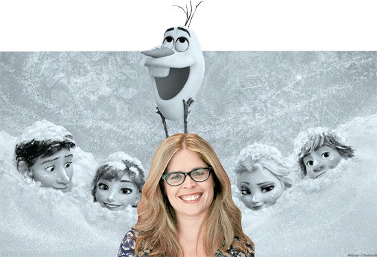4.엘사는 원래 악역이었다. 엘사의 초기 컨셉 아트는 다음과 같다.
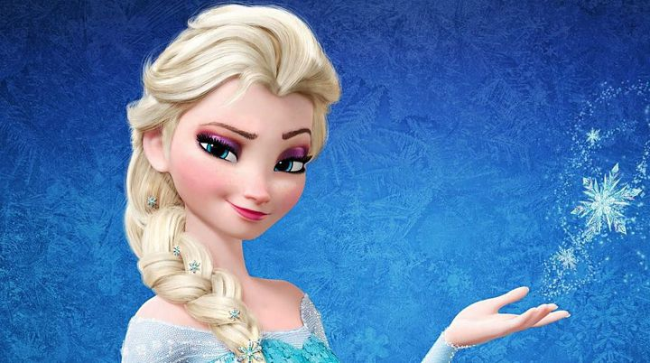 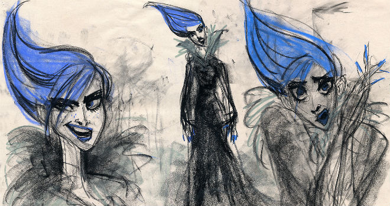5.<겨울왕국1>은 줄거리 중 결말부를 미리 만들어 놓고 시작했다.
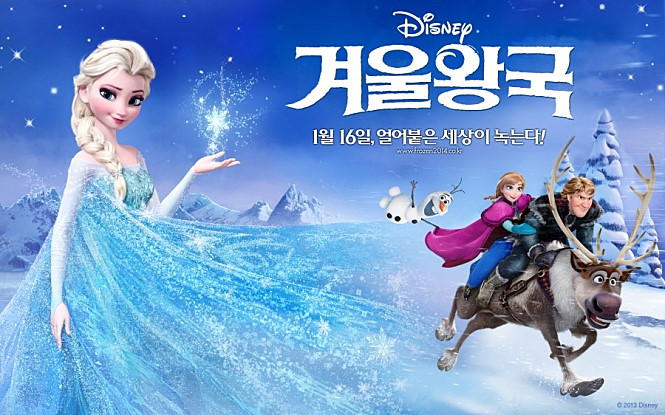6.한스,크리스토프,안나,스벤 네 인물의 이름은 원작인<눈의여왕>작가,
한스 크리스티안 안데르센을 기리는 의미로 만들어졌다. (빠르게 읽어보면 작가이름 같다.)
 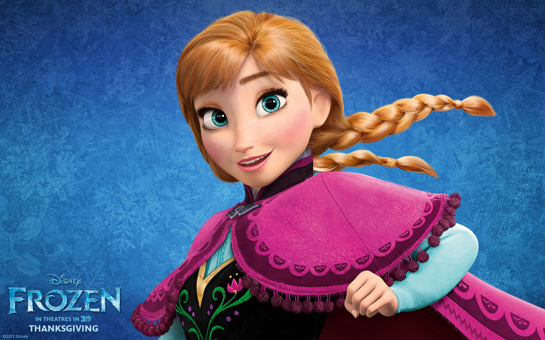
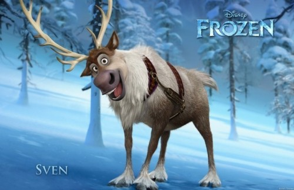
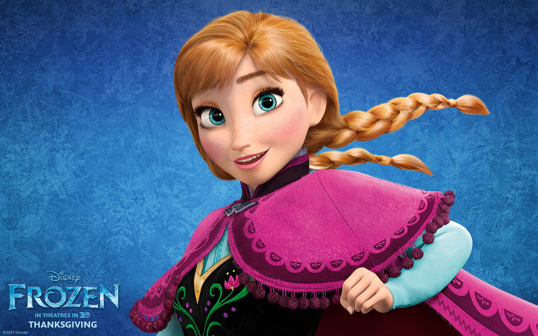
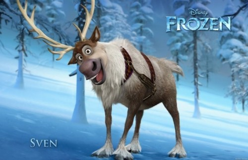

7.<겨울왕국1>은 노르웨이를 배경으로 삼고 있다. 제작진들은 풍경에 대한 영감을 얻기 위해 노르웨이를 답사했다.
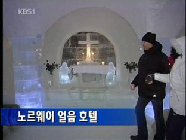 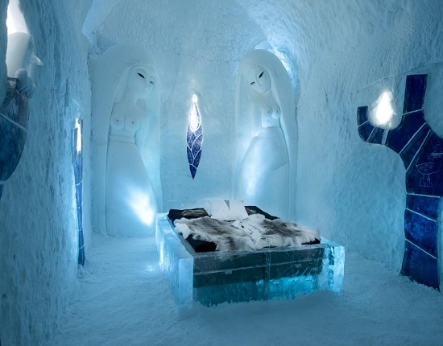9.제니퍼 리 감독은 안나는 18살, 엘사와 크리스토퍼는 21살, 한스는 23살이라고 밝혔다.
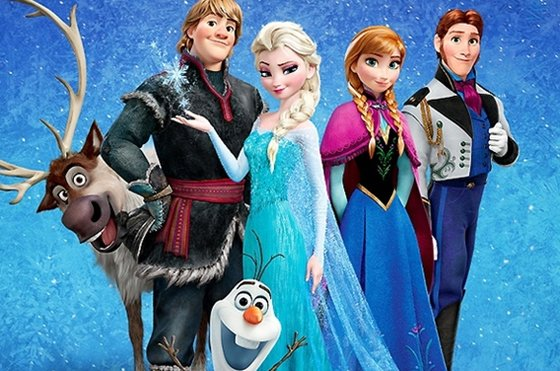10.제작진들은 엘사의 머리를 표현하기 위해
프로그램을 개발했다. 땋은 머리를 풀어헤치는 장면을 위해 42만가닥이
필요했고,CG로 처리했다고 한다.
이는 <라푼젤>의 15배 수준이다.
11.얼음궁전을 짓는 장면을 만드는데 50명의 에니메이터가 작업을 했다.
얼음궁전을 완성시키는데 9개월이 걸렸다.
12.얼음 궁전은 엘사의 감정에 따라 색이 변한다.
파란색은 행복/ 빨간색은 불안과 공포/ 노랑색은 분노를 뜻한다
13.이디나 멘젤은 라푼젤에서 <라푼젤> 역으로 오디션을 봤다.
비록 역할을 따내지는 못했지만, 디즈니 캐스팅 감족 눈에 띄어
2년뒤에 엘사역할을 맡게 되었다.
14.Let It Go는 하루만에 만들어진 곡이다.
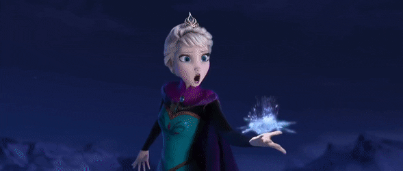15.스벤은 토르로 불릴뻔했다. 첫 이름이 토르였다.
16.영화 개봉후, '엘사'와 '안나'라는 이름은 여자아이 이름으로 인기가 높아졌다고 한다.
17.크리스토프는 노르웨이 북부에 거주하는 원주민인 사미족에게서 영감을 받았다.
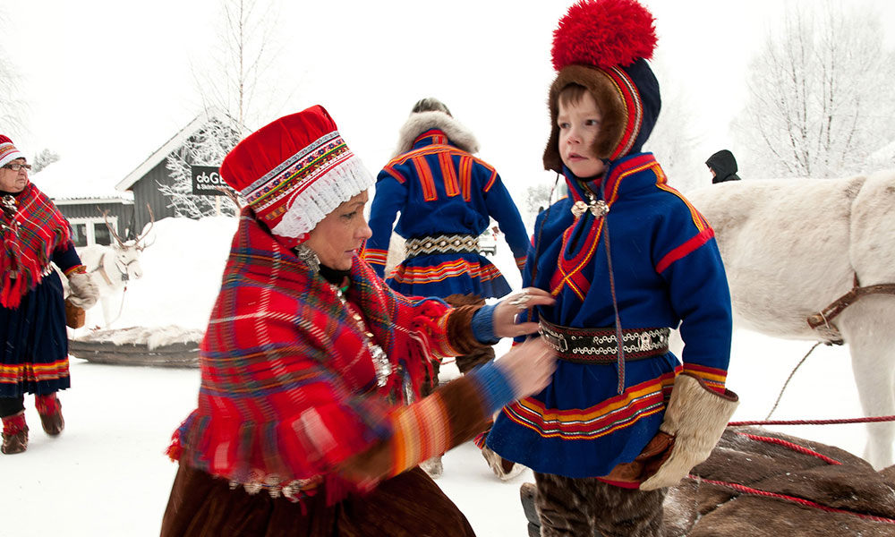18.안나가 한스왕자와 'love is open door'이라는 노래를 불렀는데,
이는 디즈니 공주 중 유일하게 악역과 듀엣을 한것이다.
19.또한 이때 시계 앞에서 노래를 하는 장면이 있는데,
이때 이 시계는 1953년 디즈니 영화 <피터팬>을 오마주 한 것이다.
20.울라프 역의 조시 게드는 대사 중 몇 부분은 제작진들을 웃기기 위하나 애드리브였다고 밝혔다.
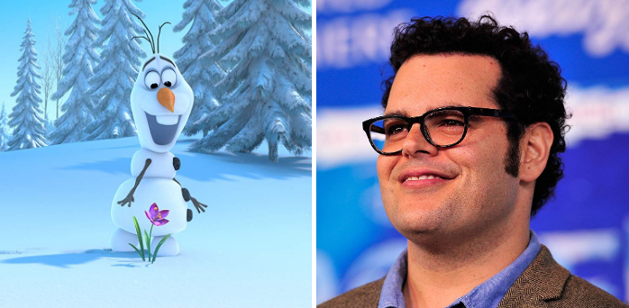